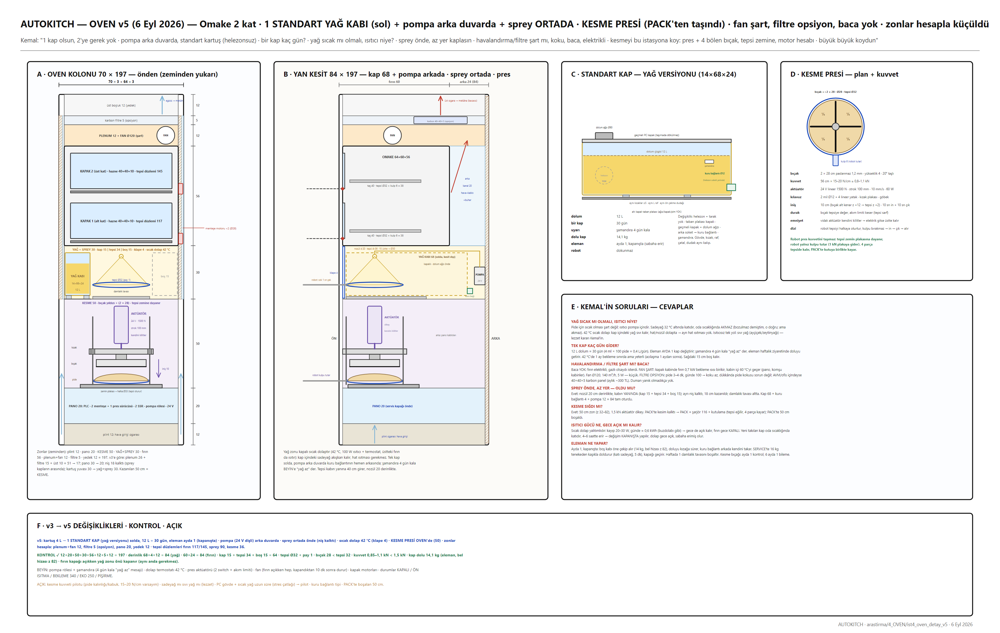
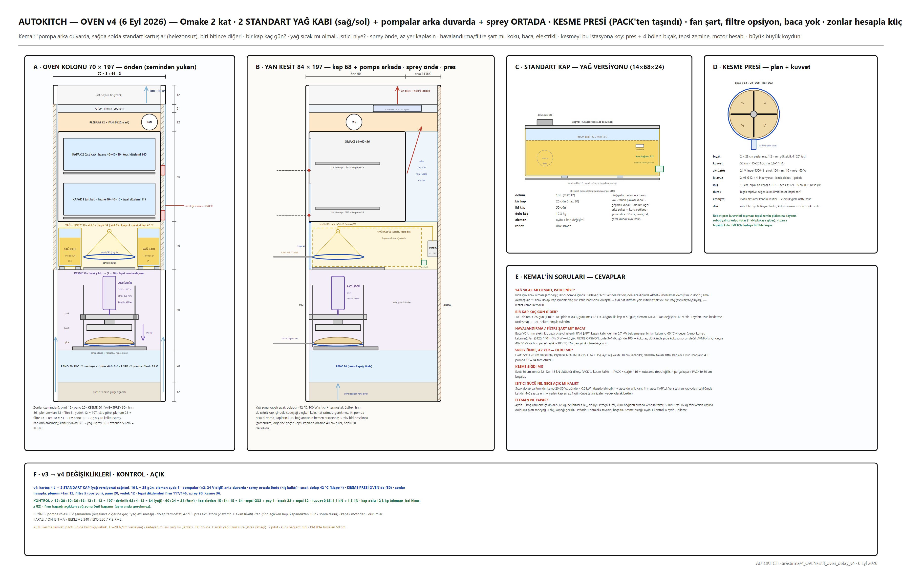
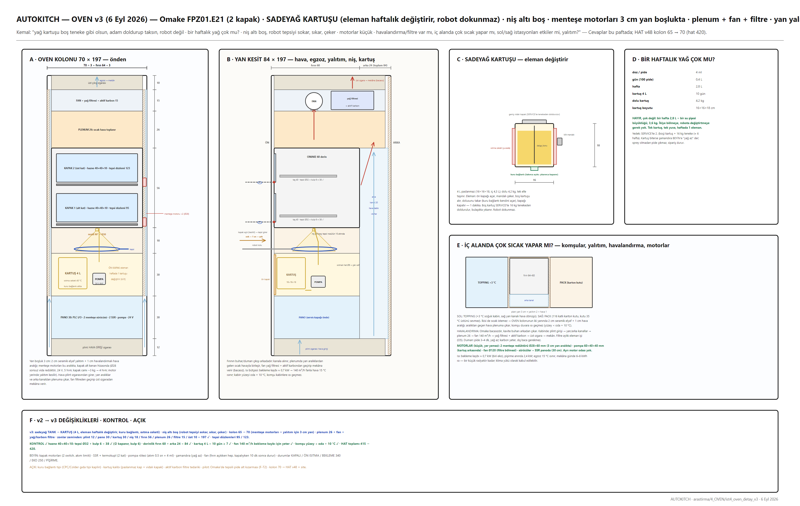
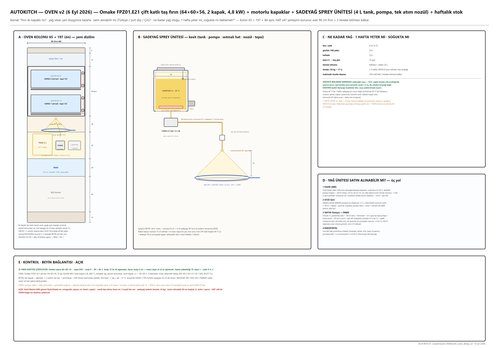

Omake FPZ01.E21 çift katlı taş fırın, motorlu cam kapaklar; altta sadeyağ spreyi (tek standart kap, pompa arka duvarda) ve kesme presi.


v4 iki kap + kesme presi
v3 kartuş + havalandırma
v2 Omake seçimi + tank| Tedarikçi / ürün | Ne | Fiyat / durum |
|---|---|---|
| Omake FPZ01.E21 (Cafemarkt) | çift katlı taş fırın 64×60×56 | 40.169 TL |
| Atalay APF-40-2 / APF-40-1 | çift / tek katlı | 49.077 / 35.526 TL |
| Empero EMP.4 | tek katlı 52×52 | 37.830 TL |
| Karacasan dijital 30×4 | 7" LCD 99 program | 55.656 TL |
| Konveyör (Senoven SM-1100, Empero, Moretti T64E) | bant fırın | 283–371 bin TL — reddedildi |
| Effeuno P134H · Zanolli · TurboChef · Ovention | yurt dışı seçenekler | €799 – ithalat |
| Sadeyağ ünitesi | 24 V dişli pompa + ısıtmalı hat + nozül (entegratör) | 8–12 bin TL |
| Gold Medal 2395 / 2496 | sinema tereyağı dispenseri sınıfı hazır ünite (ısıtmalı tank + pompa) | ≈ 1.300 $ + nozül uyarlaması |
| Alibaba ısıtmalı sos dispenseri | pompalı, ısıtmalı | ≈ 185 $ (teyit gerek) |
| Cancan 1330 | pizza dilimleme presi — bıçak yıldızı kaynağı | birkaç bin TL, yedek bıçak bol |
| Kesme + sprey ünitesi (entegratör) | 24 V aktüatör + gövde + nozül + pompa | ≈ 15–25 bin TL |
| # | Problem | Durum | Çözüm / not |
|---|---|---|---|
| O1 | Pide yanarsa / az pişerse | ÖNERİ VAR | reçeteli süre + kamera renk kontrolü |
| O2 | Motorlu kapak açılmazsa | ÖNERİ VAR | switch + 2. deneme + alarm |
| O3 | Peş peşe pişirmede taş soğur | DÜZELTİLDİ | 3 kW fırın 4 dk döngüde kendini yeniler |
| O6 | Gece açık kalmasın | ÖNERİ VAR | KAPALI / ÖN ISITMA / BEKLEME / EKO / PİŞİRME |
| O4 | Nozül tıkanması | ÇÖZÜLDÜ | gün sonu mini-CIP |
| O5 | Koku/duman | ÇÖZÜLDÜ | fan + yağ filtresi + karbon |
| F-T2 | Delikli tepside alt kabuk taş kadar çıtır mı | ÖNERİ VAR | pilot |
| F-T3 | Tepsi malzemesi ısı döngüsü | AÇIK | paslanmaz/alu pilot |
| O8–O10 | Yağ kabı: eleman değiştirir, tek kap, kuru bağlantı tipi | KARAR | CPC gıda tipi kaplin seçilecek |